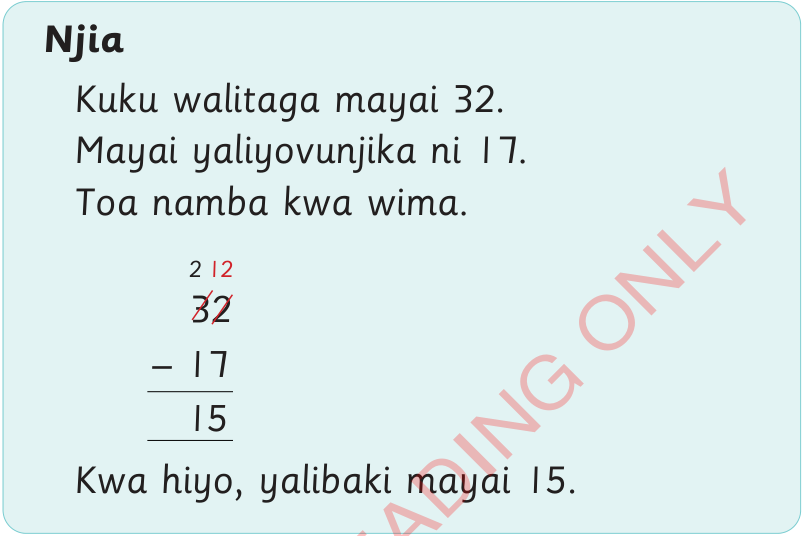

Mafumbo ya kutoa
Mafumbo ya kutoa ni hesabu iliyoandikwa kwa sentensi moja au zaidi. Mafumbo hayo yanahusiana na maisha yetu ya kila siku.
Mfano
Kuku walitaga mayai 32. Mayai 17 yalivunjika. Yalibaki mayai mangapi?

Zoezi la 11
Fumbua mafumbo yafuatayo.
1.
Bakari alikuwa na maembe 31. Alitupa maembe 12 yaliyooza. Je, yalibaki maembe mangapi ambayo hayakuoza?
2.
Boni alipanda miche 46 ya matunda. Miche 26 ilinyauka. Ilibaki miche mingapi ambayo haikunyauka?
3.
Neema alikuwa na vikombe 51. Alitupa vikombe 15 vilivyovunjika. Alibaki na vikombe vingapi ambavyo havikuvunjika?
4.
Doto alikuwa na chupa za soda 90. Aliuza chupa 61. Zilibaki chupa za soda ngapi?
5.
Watoto walikuwa na chupa 96 zenye juisi. Walikunywa juisi chupa 47. Zilibaki chupa ngapi zenye juisi?
6.
Saida alikuwa na machungwa 66. Aliwapatia wadogo zake machungwa 37. Yalibaki machungwa mangapi?
7.
Kulwa alikuwa na kalamu 75. Alimpatia rafiki yake kalamu 25. Alibaki na kalamu ngapi?
8.
Baba alikuwa na vitabu 88. Vitabu 11 vilipotea. Vilibaki vitabu vingapi?